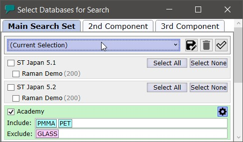

|
数据库选择
|

用于搜索的数据库
在此处您可以选择用于搜索的数据库。
ST Japan 包含多个类别，可以勾选或取消勾选。
如果没有 ST Japan 加密狗和访问文件，则只有包含 200 条随机光谱的拉曼演示类别可用于测试。
主搜索集
此选择用于：
- 简单搜索
- 作为双组分或三组分搜索的第一组分
- 以及解混搜索
第二组分
此集用作双组分或三组分搜索的第二组分
第三组分
此集用作三组分搜索的第三组分
当前选择（组合框）
使用组合框选择搜索集时，所有选择将根据已保存的选择进行更改。
将当前选择保存为新的"搜索集"
从当前选择创建一个新集。您必须输入一个名称，该名称将用于集选择组合框中。
删除所选
从您的搜索集列表中删除所选的主搜索集。
全选 / 全不选
切换选择所有数据库或不选择任何数据库。
包含 / 排除
输入您想要在搜索中包含或排除的样品名称。按 Enter 或 Return 键以确认样品名称。
如果包含名称，则仅使用具有给定名称的样品进行搜索。
如果排除名称，则名称与输入名称匹配的样品将被排除在搜索之外。
注意：所有集和选择都存储在硬盘上。